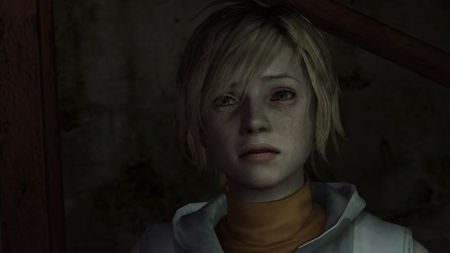
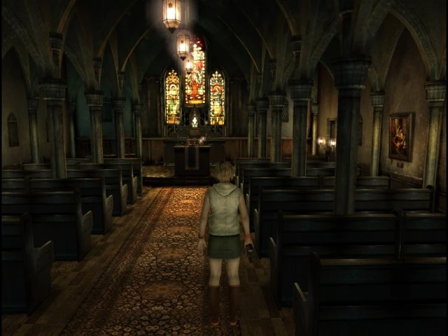

Silent Hill 3 es la tercera entrega de la serie Silent Hill y el segundo
juego en ser lanzado para PC y PlayStation 2. El juego es una secuela directa del primer juego de la saga. A
diferencia de Silent Hill 2 y Silent Hill 4: The Room, este título nunca fue lanzado para Xbox. También es
el primer juego de la serie en ofrecer un personaje femenino principal y el primero en continuar
directamente la historia central de un juego previo.
También fue el debut de Mary Elizabeth McGlynn y Joe Romersa a la saga, los cuales desde entonces han pasado
a convertirse en un elemento básico de las bandas sonoras de los juegos.
Fue re-hecho con gráficos en alta definición y nuevas voces en el Silent Hill HD Collection, junto con
Silent Hill 2.
Trama
Prólogo: Restaurante
Diecisiete años han pasado desde los acontecimientos del primer juego, y Heather Mason (el bebé que la
Incubator dio a Harry Mason al final del primer juego) es ahora una adolescente. Se revela que Harry tomó a
Heather y la puso en su cuidado, criándola como su propia hija.
Un día Heather se queda dormida dentro de un restaurante de hamburguesas, y sueña que está en Silent Hill.
Ella se encuentra a sí misma vagando a través de una versión de pesadilla del parque de atracciones de
Lakeside.
Después se despierta. Ella sale del restaurante y llama a su padre, para hacerle saber que ya va camino a
casa. Justo cuando se va, Heather se encuentra con un detective llamado Douglas Cartland, quien fue
contratado por una secta conocida como La Orden para encontrarla. Heather se aleja y entra en el baño de
damas, del cual se sale por la ventana, pero su salida es bloqueada en ambos extremos, lo que la obliga a
buscar otro camino por el centro comercial.
Prólogo: Centro Comercial
Mientras Heather vaga por el centro comercial y se encuentra con una mujer vestida toda de negro.
Ella es una sacerdotisa de la Orden, Claudia Wolf, que ha estado buscando a Heather durante mucho
tiempo. Ella le dice a Heather que sus talentos son necesarios. Heather cae a causa de una fuerte
jaqueca. Cuando Heather encuentra una radio, la cual emite un ruido cuando los
monstruos están cerca. Heather pasa a la otra realidad. A pesar de estar atemorizada, se las
arregla para regresar al mundo real.
Una vez que todo ha vuelto a la normalidad, Heather se dirige al metro para poder regresar a casa. Sin
embargo, es detenida por Douglas. Heather deja al hombre solo y confundido y entra al metro. El metro está
totalmente desierto. Heather se lleva un susto cuando casi es atropellada por un vagón del metro. Luego,
ella toma el metro hacia el alcantarillado y lucha para abrirse camino a través de los corredores, hasta que
llega a un sitio de construcción, que utiliza para llegar a otro edificio, el Centro Hilltop.
Prólogo: Centro Hilltop
Dentro del Centro Hilltop, Heather entra una vez más en el mundo de pesadilla. Ella se encuentra con un
hombre llamado Vincent Smith, quien también es miembro de la Orden. Tras una breve conversación, le
abandona. Cuando llega a la salida, se encuentra con un monstruo que la bloquea; Heather encuentra páginas
esparcidas de un cuento de hadas que contiene las palabras "Tu Fui, Ego Eris", que hace que el monstruo
desaparezca. Después de deshacerse del monstruo, Heather es llevada de nuevo al mundo normal y escapa del
Centro Hilltop alterno.
Al llegar a su casa en Villa Apartamento Daisy, Heather descubre el cuerpo de su padre, Harry Mason,
desplomado sobre su sofá. Heather sigue hacia la azotea del apartamento donde Claudia la espera. Claudia le
dice a Heather que la estará esperando en Silent Hill, y se marcha.
Prólogo: Final
Heather se encuentra a Douglas en el interior del apartamento. Heather se despide por última vez de su padre
y decide encontrar a Claudia y vengarse, a pesar de que Douglas le dice que la venganza no resuelve nada le
ofrece llevarla a Silent Hill, a lo que ella acepta. Fuera del apartamento, Douglas le entrega a Heather un
mapa de Silent Hill y le dice que Vincent dijo que debe buscar a un hombre llamado Leonard Wolf. También le
da el cuaderno de su padre, que ofrece una explicación del pasado de Heather y como un último adiós hacia
ella.
Llegada a Silent Hill
Al día siguente de los hechos acontecidos en el complejo de apartamentos, Heather y Douglas llegan a Silent
Hill, encontrando al pueblo abandonado y cubierto por niebla. Ellos encuentran refugio en el Jack's Innr;
Heather emprende su viaje al hospital Brookhaven, mientras que Douglas se dirige a registrar la casa de
Leonard Wolf.
Heather se dirige al hospital en busca de pistas sobre el paradero de Claudia. Pero en su lugar,
encuentra enfermeras demoniacas. También se entera de que uno de los pacientes del hospital, Stanley
Coleman, tiene una obsesión con ella, y que Leonard se encuentra dentro del hospital. Heather
también se sorprende al enterarse de algo que ella había olvidado; ella es, de hecho, la reencarnación de
Alessa Gillespie.
Heather entra en el mundo de pesadilla una vez más y es aquí donde se encuentra con Leonard Wolf. Por
desgracia, Leonard se ha degenerado en un monstruo y comienza a atacar a Heather, quien finalmente consigue
derrotarlo obteniendo así el Sello de Metatron, un talismán que poseía Leonard. Después de derrotarlo, el
hospital vuelve a la normalidad. Antes del regreso de Heather, Claudia y Vincent tienen una conversación
sobre el culto.

Parque de atracciones
Heather le pregunta sobre el paradero de Douglas y Vincent le dice que él le dejó un mensaje: "La iglesia
está al otro lado del lago." También le dice a Heather que Claudia está dentro de la iglesia, y que tiene
que pasar a través del parque de atracciones de Lakeside. Heather sigue el consejo de Vincent, sólo para
notar que al llegar al parque, entra una vez más en el mundo de pesadilla, dándose cuenta de que se ha
convertido en la pesadilla que tuvo al comienzo del juego.
En otra parte del parque, Claudia y Douglas están discutiendo; Douglas se siente traicionado por Claudia,
diciendo que mientras que ella dice que Heather sufrió de un lavado de cerebro, él siente que Heather es
en realidad una chica normal. Claudia entonces explica que tienen que traer de vuelta a Heather al culto
debido a que la entidad tiene que nacer y dar paso a un nuevo "Paraíso".
Douglas señala entonces que un lugar sin ningún tipo de preocupaciones o consecuencias negativas no es realmente
un paraíso, sino más bien, un mundo estancado donde no pasa nada de verdadero valor, diciendo
que ese tipo de mundo sería inútil y aburrido, y en respuesta, Claudia le dice que le compadece.
Douglas saca su arma y le apunta a ella, y lo que sucede después es un misterio.
El Recuerdo de Alessa & la Iglesia
Después de explorar el parque de atracciones, Heather finalmente se encuentra con Douglas, sin
embargo, él no puede venir con Heather debido a su fractura en la pierna (no se sabe cómo se había
roto, pero más tarde, Vincent afirma que Claudia tiene "poderes"). Heather promete volver una vez que
haya terminado lo que vino a hacer, y ella se encuentra en la misma zona del parque de atracciones en la que
Harry estuvo diecisiete años atrás. En el carrusel, Heather encuentra a su doppelgänger, el Recuerdo de
Alessa.

Después de derrotar a su lado oscuro, Heather llega a la entrada del culto de la iglesia. Heather se
encuentra con Claudia y le dice que a Alessa le gusta el mundo tal y como es (que en realidad podría
haber sido Alessa, o simplemente Heather pretendiendo ser ella como una forma de manipular a Claudia).
Claudia como tiene una fuerte creencia explica que hay demasiado sufrimiento en el mundo y que el Dios
de su culto cambiará todo eso. Heather repentinamente empieza a sentir dolor.
Heather se encuentra con Vincent dentro de la biblioteca. Él le pregunta sobre el Sello de Metatron.
Vincent se alivia, ya que cree que puede ser utilizado como un arma para derrotar a Claudia.
Claudia hiere a Vincent.
Después de que Claudia se calma, ella vuelve a su habitual compostura y agradece a Heather por alimentar
a la deidad con odio.
Vincent, todavía vivo, le dice desesperadamente a Claudia que Heather tiene el Sello de Metatron, Claudia
entonces le revela que el Sello de Metatron no es más que una baratija, y acaba con Vincent.
Final
El colgante que Heather lleva alrededor de su cuello fue un regalo de cumpleaños de su padre. En el
interior, el mismo contiene una pequeña pastilla de Aglaofotis.
Heather se traga el Aglaofotis, lo que provoca que vomite a la entidad en el suelo. Después de burlarse
de Claudia, Heather intenta pisotearlo, pero Claudia la empuja y lo recoge del suelo.
Después de ingerir a la entidad, Claudia cae por un agujero, y Heather salta detrás de ella. Heather entonces
se encuentra cara a cara con el ente, el cual se asemeja a un cuerpo esquelético, con una cara de
reptil hembra y una especie de casco de metal proporcionado por Valtie. Heather derrota a la entidad,
y así finalmente logra vengar a su padre. Heather cae al suelo y llora por la
muerte de su padre.
Finales
Final Normal ("Bueno"):
Heather vuelve al parque de atracciones normal, mientras actúa de
manera extraña cuando se acerca a Douglas. Actúa como
si estuviera a punto de matar a Douglas, pero de repente se detiene y le dice que estaba jugándole una
broma. Douglas hace un comentario acerca de su retorcido sentido del humor. Luego insiste en que Douglas
la llame Cheryl, el cual es el nombre que su padre, Harry le dio. Douglas le pregunta si
ella también está considerando volver a su color negro original de cabello. El juego termina con
los créditos pasando sobre una imagen de Heather
visitando la tumba de su padre.
Este es el único final que se puede obtener en una primera partida. Además, este se considera el final
canónico.
Final Poseída ("Malo"):
Heather está de pie inmóvil, con el parque de atracciones todavía en el Otro Mundo.
Douglas está tumbado frente a ella.
Para obtener el final "Poseída", el jugador debe haber terminado el juego al menos una vez, con Heather
teniendo acumulado un cierto número de "puntos" en la segunda partida. Los puntos se acumulan matando
monstruos (10 puntos cada uno), recibiendo daño (1 punto por cada ataque), o perdonando a la mujer
confesora (1.000 puntos). El jugador tiene que acumular 4.000 puntos para recibir este final.
Final Venganza:
Al igual que Silent Hill y Silent Hill 2, Silent Hill 3 tiene un final OVNI.
Una secuencia estilo cómic comienza. Heather vuelve a casa y encuentra a Harry Mason sentado en
una mesa bebiendo té con un extraterrestre. James Sunderland, el protagonista de Silent Hill 2,
se puede ver al fondo. Heather informa a su padre de lo que ha vivido.
La siguiente escena muestra al pueblo siendo destruído en un ataque similar a una película de
ciencia ficción de horror del tipo B de 1950.
Los créditos comienzan con un hombre japonés invisible animando a un coro invisible cantando
una canción extraña, titulada Silent Hill no Uta ("La canción de Silent Hill") acerca de los
personajes de Silent Hill 3, con referencias tontas hacia cada uno de los personajes.